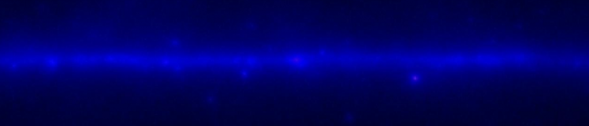
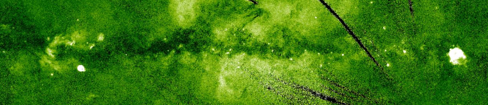
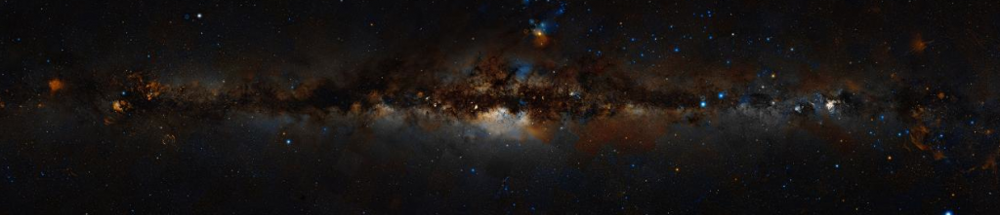
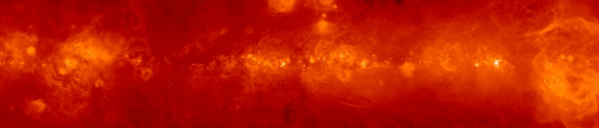
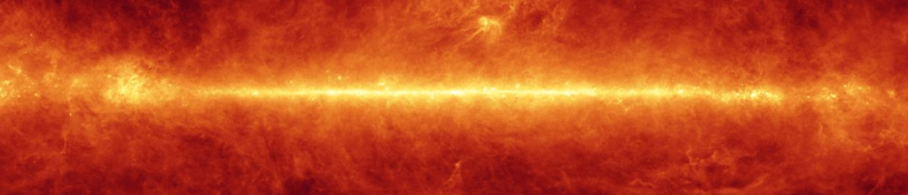
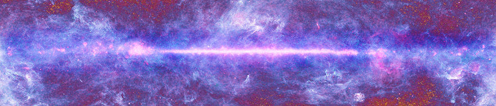
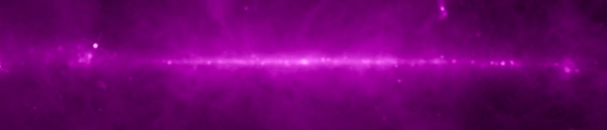

| Install Chromoscope as Plugin |
Download an unzip the Chromoscope folder, rename folder from current 1.1.3 to chromoscope. Copy to Astrolab folder and delete original once tested ok.
If the 'tiles' are downloaded separately then the files tested in our lab
are as listed below. Astrolab points at index-local.html in the
chromoscope folder to start, this file contains the information to point
to the data 'tile' folders. It may require editing to match the
downloaded tile folders, the values used in our case are
// The spectral bands should be in order
chromo.addWavelength({key:'g',useasdefault:false,name:'gamma',tiles:'fermi-tiles/',ext:'jpg',title:'gamma',attribution:'
chromo.addWavelength({key:'x',useasdefault:false,name:'xray',tiles:'RASS-tiles/',ext:'jpg',title:'xray',attribution:'
chromo.addWavelength({key:'v',useasdefault:true,name:'optical',tiles:'DSS2-tiles/',ext:'jpg',title:'optical',attribution:'
chromo.addWavelength({key:'a',useasdefault:false,name:'halpha',tiles:'H-alpha-tiles/',ext:'jpg',title:'halpha',attribution:'
chromo.addWavelength({key:'f',useasdefault:false,name:'farir',tiles:'IRAS-tiles/',ext:'jpg',title:'farir',attribution:'
chromo.addWavelength({key:'m',useasdefault:false,name:'microwave',tiles:'Planck-tiles/',ext:'jpg',title:'microwave',attribution:'
chromo.addWavelength({key:'r',useasdefault:false,name:'radio',tiles:'Radio_vsmoothed-tiles/',ext:'jpg',title:'radio',attribution:'
Folder Name: fermi-tiles

Gamma-Ray (Fermi All Sky Survey)
The Fermi Gamma-ray Space Telescope, formerly GLAST, reveals the high-energy
sky between 10 keV – 300 GeV. With Fermi, astronomers can study black holes and
other highly energetic events in the universe. Physicists can use Fermi to study
subatomic particles at energies far greater than those seen in ground-based
particle accelerators. And cosmologists gain valuable information about the
birth and early evolution of the Universe.
Folder Name: RASS-tiles

X-Ray (ROSAT All Sky Survey)
The Roentgensatellit (ROSAT) was a joint German, US and British X-ray
astrophysics project. ROSAT carried a German-built imaging X-ray Telescope (XRT)
with three focal plane instruments that allowed researchers to probe high-energy
x-ray activity in the universe between 0.1 to 2 keV. ROSAT also performed an all
sky survey in revealing the structure of our galaxy in this energetic wavelength
regime.
Folder Name: DSS2-tiles

The Visual Sky (DSS / Wikisky)
The Digitized Sky Survey (DSS) comprises a set of all-sky photographic surveys in E, V, J, R, and N bands conducted with the Palomar and UK Schmidt telescopes. The photographic survey has been digitized to support the Hubble Space Telescope observing programs but also as a service to the astronomical community.
The particular blend of the DSS used for the Chromoscope comes from Wikisky,
a similar tool that allows you to explore individual objects in the night sky
and learn a little more about them.
Folder Name: H-alpha-tiles

H-Alpha (WHAM / SHASSA / VTSS / Finkbeiner)
Hydrogen is the most abundant element in the universe and there is plenty of it in our own Milky Way galaxy. H-alpha refers to a specific energy emitted by hydrogen atoms and seen as red light with a wavelength of 656.3 nanometres. The h-alpha part of the Chromoscope comes from several source including WHAM, The Wisconsin H-Alpha Mapper, and SHASSA the Southern H-Alpha Sky Survey Atlas. WHAM is funded by the American National Science Foundation.
H-alpha allows us to see features on the surface of the Sun as well as
tracing out the location of hydrogen gas in our galaxy.
Folder Name: IRAS-tiles

Far Infrared (IRAS)
The Infrared Astronomical Satellite (IRAS) was a joint project of the US, UK and the Netherlands. The IRAS mission performed an unbiased, sensitive all sky survey at 12, 25, 60 and 100 µm. IRAS increased the number of cataloged astronomical sources by about 70%, detecting about 350,000 infrared sources.
IRAS discoveries included a disk of dust grains around the star Vega, six new
comets, and very strong infrared emission from interacting galaxies as well as
wisps of warm dust called infrared cirrus which could be found in almost every
direction of space. IRAS also revealed for the first time the core of our
galaxy, the Milky Way.
Folder Name: Planck-tiles

Microwave (Planck)
The Planck satellite is an ESA mission that launched May 2009 to make
fundamental measurements of cosmology – the study of the properties of our
universe as a whole. Planck has been stunningly successful, building on the
success of the WMAP mission, and has completed one full sky survey. It has
mapped the Cosmic Microwave Background (CMB) radiation – the oldest light in the
universe – and produced a detailed, full-sky map, using data from nine microwave
wavelength bands ranging from 10mm to 0.35mm. As well as seeing the oldest
light in the Universe, it also sees gas and dust within our own Galaxy.
Folder Name: Radio_vsmoothed-tiles

Radio (Haslam)
408MHz, a relatively low radio frequency, allows us to measure radiation produced by electrons travelling close to the speed of light and spiralling in magnetic fields. The full-sky map of Haslam et al. (1981-1982), combining data from 3 large (60-100m) radio telescopes around the world, shows strong emission from the disk of our galaxy. Away from the disk, large features are also seen, which are thought to be remnants of nearby ancient supernova. The map is also dotted with distant radio galaxies.